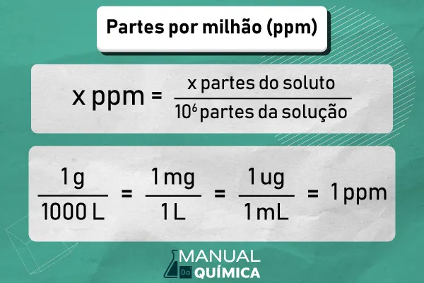

Playlist de Química


Parte por milhão (ppm)
PPM (Parte por Milhão) é uma unidade que usamos para medir a concentração de soluto em soluções muito diluídas. Basicamente, ela indica quantas partículas do soluto existem em um milhão de partículas da solução total (soluto + solvente). É crucial para analisar a qualidade do ar, da água ou em amostras ambientais, onde a presença de contaminantes é bem pequena.
